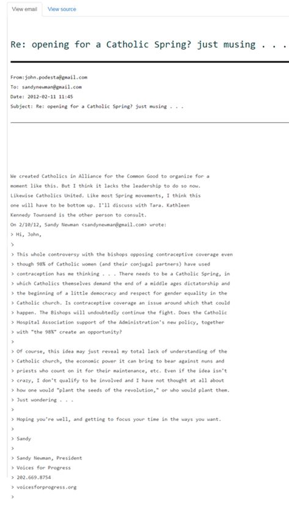

John Podesta, chef de la campagne électorale de Hillary Clinton et lieutenant fidèle de l'étrange dame, a été surpris en flagrant délit de sacrilège ! Aussi bizarre que cette information puisse vous paraître, je vous prie tout de même de lire le paragraphe qui suit. Il se trouve que John Podesta était en train de discuter par voie de courrier avec son homologue, Sandy Newman, ex-chef d'Obama.
Leurs confidences ont été éventées par un hacker indiscret qui a rendu public ce que les deux hommes politiques tenaient absolument à cacher. Il se trouve qu'il ressort de leurs propos, que les deux personnages peaufinaient les détails d'une persécution des chrétiens qu'il fallait, à leur goût, organiser le plus vite possible. Le premier objectif d'une telle offensive générale serait l'Église catholique de Rome ... Ni plus ni moins ! Elle est accusée de tous les péchés : elle a une vision rétrograde, elle ne reconnaît pas les sodomites - oh pardon ! Cela ne se dit plus ! - donc les homosexuels ; elle sanctifie l'inégalité entre homme et femme... Bref, une structure d'une autre époque et qui a fait son temps qu'il faudrait - hop ! - soit réformer soit neutraliser pour qu'elle ne gâte pas la fête.
Que dire alors des gens qui, à l'instar des Catholiques léfevristes, font leur prières en latin ; ou encore des Orthodoxes qui, par le seul fait d'appartenance au groupe ethnique slave, sont apparemment la lie de l'humanité, son marc du bas de verre qu'il faut rejeter dans les steppes glacées silencieuses de leur chère Mère Patrie.
Ceci dit, les réformateurs américains n'entendent pas y aller de mainmorte ! Ne seront bannis ou proscrits que des gens qui ne reconnaissent pas la nouvelle Eglise romaine réformée. Décidément, il est bien loin le temps où les moines se lavaient les mains avant de toucher à la Bible, par peur de la profaner.
En citant ce cas, le périodique électronique russe « Radonezh.ru » nous raconte, en fait, la déchristianisation de l'Europe qui, pendant de longs siècles, a connu un effort spectaculaire mais qui, après avoir lésé Dieu et ses saints, est en train de dépérir à petit feu.
Si vous vous en doutez, observez votre espace ambiant ! N 'avez-vous pas entendu parler de l'Église de Gesté ? C'est une petite commune qui a décidé que l'Église était démesurée par rapport à la taille de leur paroisse.et qu'il fallait en construire une autre - moins ambitieuse, - par rapport au nombre d'ouailles. Quelle que soit la solution, elle est forcément mauvaise. Mauvaise parce que la France file un mauvais coton en procédant de la sorte. Mais en fait, elle ne fait que suivre la voie soviétique qui a plongé le pays dans un véritable enfer. Je m'explique.
La révolution n'a pas été un phénomène spontané dans la société russe, mais ourdie de longue main, avec un travail préparatoire, à commencer même avant l'époque de Dostoïevski et ses « Démons » (autre variante : « Les Possédés »), tant affectionnés à travers le monde occidental. Ce processus a été amorcé à l'époque de 1789, a perduré pendant le règne de Nicolas Ier pour voir l'ivraie pousser comme du chiendent à la fin de XIX où les révolutionnaires se sont mis à s'attaquer aux représentants des autorités légales ? On les appellerait « terroristes » aujourd'hui... Le peuple éprouvait un sentiment de totale indifférence à l'égard de la famille de l'empereur. Les prêtres devinrent l'objet de dérision et des mauvaises plaisanteries. La famille fut reconnue une instance obsolète et, somme toute, inutile. Le culte d'un pouvoir fort et d'un héros providentiel qui sortirait le pays du pétrin fut extrêmement fort...
Je crois qu'à cette seule description, vous devinez qu'il existe une sorte de parallélisme entre ce peuple russe iconoclaste du début XX et la France d'aujourd'hui. En cas de la Russie, les conséquences ne se firent pas attendre : l'Empire perdu et disloqué, le tsar et les membres de sa famille assassinés, l'état moral du peuple au plus bas, etc. Il avait fallu plus de 70 ans pour expier la faute et rendre à Dieu ce qui est à Dieu.
Un pays qui détruit ses temples ne saurait rester sur la carte. Dieu ne le tolérerait pas. La Russie en fit la triste expérience. Quant à la France, je répondrais à ceux qui parfois, par protestation, rêvent de Poutine pour rétablir l'ordre et les coutumes du pays, qu’il ne s'agit pas de Poutine ! Point !
Certes, Poutine est un grand homme politique, mais il est la chair de la chair de son peuple. Poutine n'eut-il jamais existé, que le peuple russe s'en procurerait un autre ! L'état d'esprit des gens est à l'avenant des agissements du président de Russie. Mais la France n'est pas la Russie. Il est impensable, dans la Russie d'aujourd'hui, que l'on démonte une église, qu'on en abat les murs sans que personne ne réagisse. En revanche, les tendances des années 20-30 du XX siècle rappellent bien la France d'aujourd'hui. Il semblerait que les Russes aient déjà parcouru un bien long chemin qu'il reste encore à parcourir à la France : il faut passer par l'échec, les morts, la guerre civile, la pénurie, etc. - pour ensuite comprendre que l'on a fait une erreur, rebrousser le chemin et le reprendre dans le bon sens. Reste à savoir si la France le veut. Sinon...
Mais il n'y a pas de « sinon » puisqu'il n'existe aucune autre voie possible. Le peuple de France doit mûrir, prendre ses responsabilités et enfin, se choisir un dirigeant capable de redresser la situation. Le problème est beaucoup plus profond, pour ne pas dire abyssal, par rapport même à la crise migratoire. Et ce n'est qu'au moment où toutes les églises seront rouvertes et que la messe soit célébrée dans tout le pays que les temps paisibles reviendront. Qui aime bien châtie bien ! Et le bon Dieu aime trop la France pour la laisser se perdre.
Partager cette page